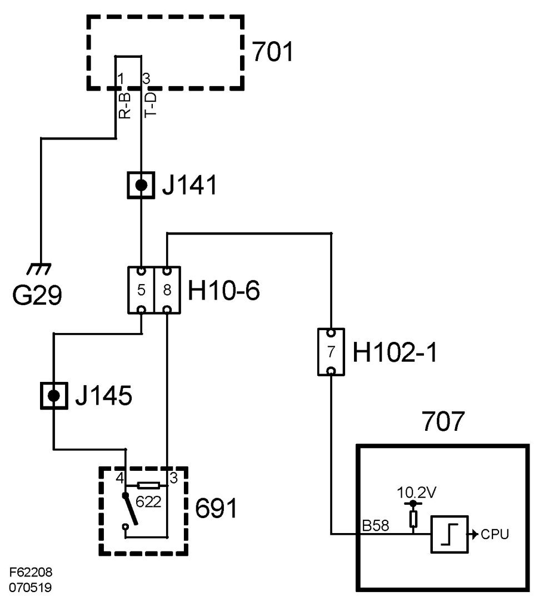

Boot Lid Cannot Be Opened With the Handle.
Boot Lid Cannot Be Opened With The Handle.

Fault symptom
Boot lid cannot be opened with outer handle.
Conditions
Car not locked; alarm not set.
Boot lid handle active.
Diagnostic help
The handle is deactivated when speed exceeds 13 km/hr.
Test value:
Trunk Handle Switch
(See also description of readings/activations in diagnostic tool)